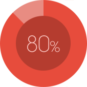

古怪的糖果
学生/前端爱好者
个人技能


- 


为了更好的设计，为了更好的钱途
之前用Jquery中click方法模拟点击某个按钮时，无法触发该按钮附带的href链接，解决方法如下
jQuery(function($){
var mo2g='';
//给A标签中的文字添加一个能被jQuery捕获的元素
$('a').append(mo2g);
//模拟点击A标签中的文字
$('#mo2g').click();
});
使用 var 声明的变量会自动被添加到最接近的环境中。 在函数内部， 最接近的环境就是函数的局部 环境；在 with 语句中，最接近的环境是函数环境。如果初始化变量时没有使用 var 声明，该变量会自 动被添加到全局环境。如下所示：
function add(num1, num2) {
var sum = num1 + num2;
return sum;
}
var result = add(10, 20); //30
alert(sum); //由于 sum 不是有效的变量，因此会导致错误
以上代码中的函数 add() 定义了一个名为 sum 的局部变量，该变量包含加法操作的结果。虽然结 果值从函数中返回了，但变量 sum 在函数外部是访问不到的。如果省略这个例子中的 var 关键字，那 么当 add() 执行完毕后， sum 也将可以访问到：
function add(num1, num2) {
sum = num1 + num2;
return sum;
}
var result = add(10, 20); //30
alert(sum); //30
上面这个例子中的变量 sum 在被初始化赋值时没有使用 var 关键字。于是，当调用完 add() 之后，添 加到全局环境中的变量 sum 将继续存在；即使函数已经执行完毕，后面的代码依旧可以访问它。
3
4
5
捐赠共勉